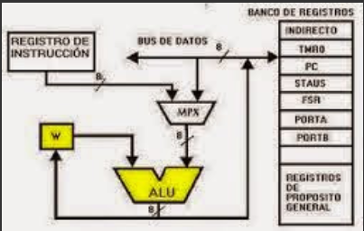

Registros de control y de estados.
Se utilizan para controlar las operaciones del procesador, la mayor parte de estos registros no son visibles al usuario y algunos pueden ser accesibles a las instrucciones de maquina ejecutadas en un modo de control. Los registros utilizados son los siguientes:
Registro de direcciones de memoria (MAR), el cual contiene la dirección en donde se efectuará la próxima lectura o escritura de datos. El numero de direcciones depende del tamaño de la MAR.
Registro de datos de memoria (MBR), contiene los datos que van a ser escritos en la memoria o los que fueron leídos en ella.
Registro de direcciones de entrada y salida (I/O AR), especifica al dispositivo ya sea de entrada o salida.
Registro de datos de entrada y salida (I/O BR), es una área temporal en donde se lleva a cabo el intercambio de datos entre el procesador y el dispositivo de entrada y salida que esta especificado en IOAR.
Registro de instrucciones (IR), contiene la dirección de la siguiente instrucción que se va a ejecutar.
Palabras de estado del programa (PSW), contiene códigos de condición junto con otras informaciones de estado como el signo, acarro, desbordamiento, entre otras.

Ejemplos de registros de CPU reales.
En algún diseño concreto de procesador es posible encontrar otros registros relativos a estado y control. Puede existir un puntero a un bloque de memoria que contenga información de estado adicional (por ejemplo, bloques de control de procesos). En las máquinas que usan interrupciones vectorizadas puede existir un registro de vector de interrupción. Si se utiliza una pila para llevar a cabo ciertas funciones (por ejemplo, llamada a subrutina), se necesita un puntero de pila del sistema. En un sistema de memoria virtual se usa un puntero a la tabla de páginas. Por último, pueden emplearse registros para el control de operaciones de E/S. En el diseño de la organización de los registros de control y estado entran en juego varios factores. Una cuestión primordial es el soporte del sistema operativo. Algunos tipos de información de control son de utilidad específica para el sistema operativo. Si el diseñador del procesador posee una comprensión funcional del sistema operativo que se va a utilizar, la organización de los registros puede adaptarse hasta cierto punto a ese sistema operativo. Otra decisión importante en el diseño es la distribución de información de control entre registros y memoria. Es frecuente dedicar los primeros (más bajos) pocos cientos o miles de palabras de memoria para fines de control. El diseñador debe decidir cuánta información de control debiera estar en registros y cuánta en memoria. Se presenta el compromiso habitual entre coste y velocidad.